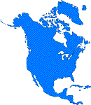
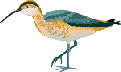
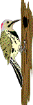
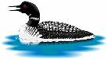
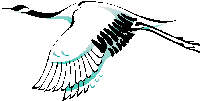
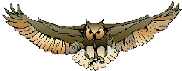

|
WHIRL E-Birds: |
 |
|
WHIRL E-Birds: |
 |
| WHIRL is a research project. The main focus of this project is bring all this information together, and provide a simple, uniform way of accessing it. For example, every Web page for a bird can be searched for by common name, scientific name, order or family, whether or not it was originally organized in this fashion. Similarly, all the bird resources can be searched for by geographical distribution. |  |
 |
You can browse the entire database by
 NBHC
birding hotlines. NBHC
birding hotlines. |
 |

Advanced Search
AcknowledgementsWHIRL indexes Web pages found at many sites, some of which are summarized below. This listing is not comprehensive. However, a complete, up-to-date listing of all indexed sites is available from the search engine. |
 |
| WHIRL E-Birds is "powered by" WHIRL, a new type of internet search
engine. Compared to search engines like Altavista,
WHIRL indexes a relatively small number of sites, but understands much
more about what it indexes. More information is available on the WHIRL
home page.
Comments to: wcohen@research.att.com |
 |